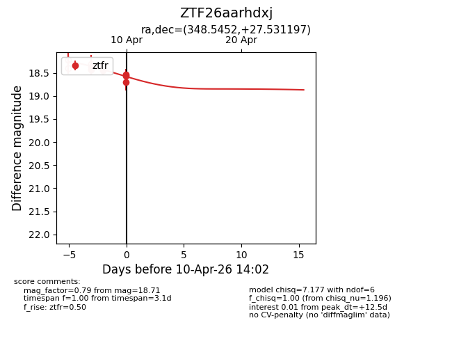
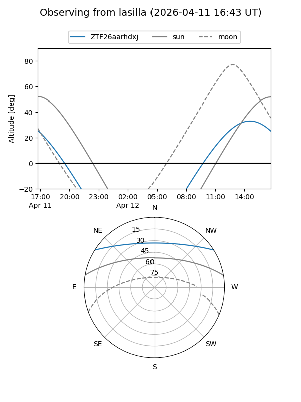
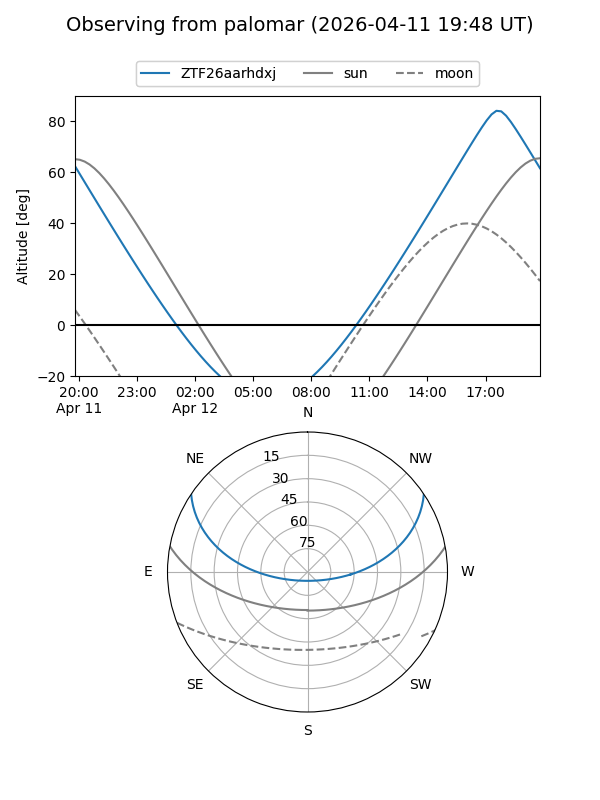
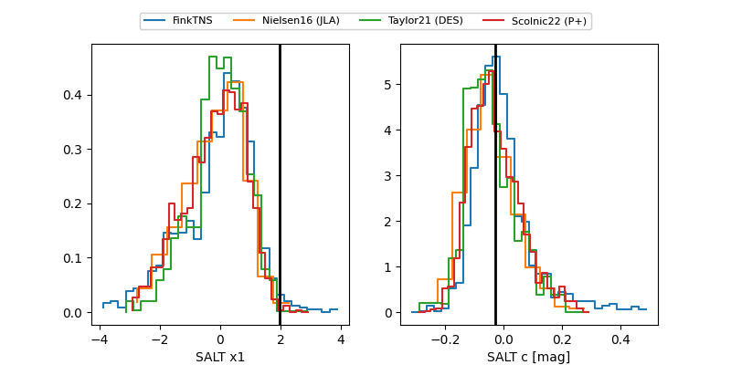

ZTF26aarhdxj
Target ZTF26aarhdxj at 2026-04-10 14:09
Aliases and brokers:
FINK: link
Lasair: link
ALeRCE: link
alt names
ZTF26aarhdxj (ztf,fink_ztf)
Coordinates:
equatorial (ra, dec) = 348.5452,+27.53120
equatorial (HMS+DMS) = 23:14:10.86,+27:31:52.31
galactic (l, b) = (97.8440,-30.55953)
Flags:
Photometry:
last ztfr=18.71
7 ztfr detections
Lightcurve

Visibility


Additional plots
